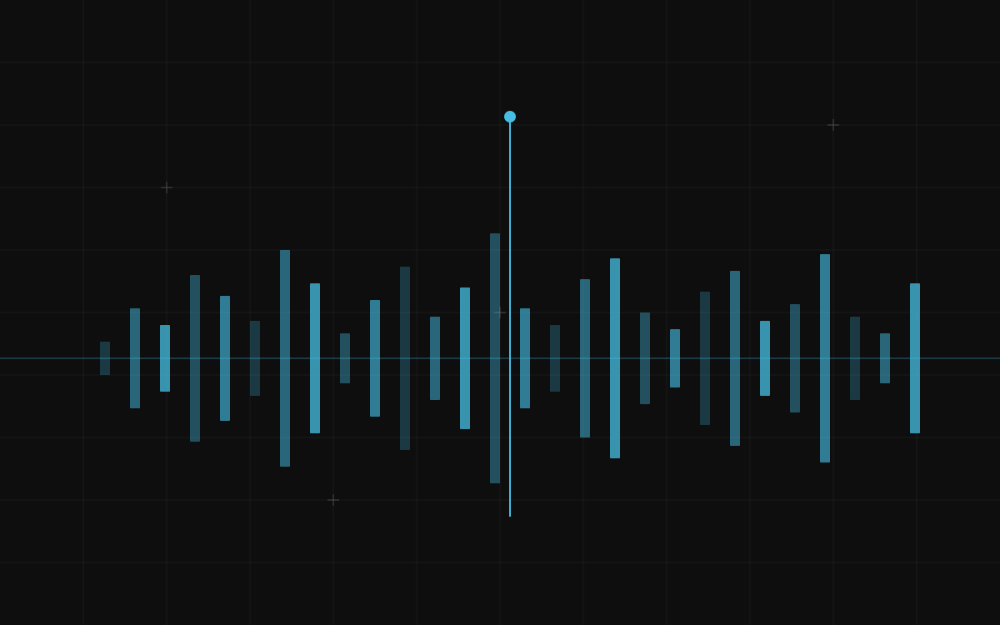

Six hours between filming and published becomes under two.
A cookery channel run by one person with 60k subscribers. A podcast duo. A German comedian posting shorts. Two educational creators. A photographer who films behind the scenes. Not media companies — people who are at the same time the talent, the editor, the publisher and the customer service desk, and who are quietly close to burning out on the three jobs that are not the one they love.
Filming takes two hours, editing takes six, captions take one, and the description, tags, thumbnail and scheduling take another. They are not tired of making things. They are tired of the hours between having made a thing and it being online.
- Transcribing everything, accurately, with timestamps and who said what
- Removing silence, filler, false starts and the fourth attempt at a sentence
- Suggesting clips, ranked, with timestamps and the reason each one was picked
- Adding captions in your own font, position and language, plus the SRT file
- Reformatting one master edit into 16:9, 9:16 and 1:1, keeping you in frame
- Writing the description, chapters and tags from the transcript
- Sorting comments into questions, abuse, business enquiries and everything else
- Keeping the archive so “have I already covered this?” has an answer
- What is funny. What is true. What is worth saying
- The hook — the first three seconds
- Whether this goes out at all
- The voice
- The overnight rough cut
- Drop the day’s footage in a folder. Overnight it returns a transcript, a rough cut with the silence removed, and eight ranked clip suggestions with reasons attached — “laugh at 04:12”, “question answered cleanly at 19:40”.
- The fifteen-minute pick
- You sit down for fifteen minutes and choose. That is the whole of your part in the routine work, and it is deliberately the only point where you are asked to think.
- The finished clips
- Chosen clips cut, captioned in your existing style — same font, same colour, same placement, matched to what you already use — reformatted per platform, and dropped into a publish folder with description, chapters and tags drafted.
- The comment sorting
- Four buckets each morning. Business enquiries go to a real inbox. Abuse goes to a folder you never have to open unless you want evidence.
- The archive
- Every transcript searchable. This turns out to be the sleeper hit: after two years most creators cannot remember what they have said, and the archive removes the fear of accidental repetition.
It does not write the take and it does not write in your voice.
No AI-generated scripts, no synthetic narration, no “in the style of”. The reason is commercial as much as ethical: the voice is the entire asset. A creator whose voice can be generated has sold the only thing that was theirs. We say this in the first meeting and we have lost one engagement over it.
Hooks stay human. For thumbnails we make variants of your own photograph — crops, text placement — never a synthetic image.
Hours between “filming ended” and “published” — typically from around six to under two. Uploads per week without more filming days. And the one they mention unprompted six months later: they have their evenings back.
When someone is not posting because they have nothing they want to say. Faster publishing makes that worse, visibly and quickly. Twice we have told a creator that their problem comes before the edit.
Fifteen minutes of picking each morning. Everything else runs while you sleep.
Filming took two hours and everything after it took six, and I was starting to resent the channel. Now I drop the footage in a folder before bed and in the morning there is a transcript, a rough cut with all the dead air gone, and eight clips it thinks are good with a reason attached to each one. He would not build anything that writes in my voice and he explained why in the first meeting, and he was right — that is the only thing I actually own.
The archive is the thing nobody would put in a brochure and it is the thing I use every week. Two years of episodes and I could never remember whether we had already covered something, so we either repeated ourselves or avoided good topics out of fear. Now it is searchable and that anxiety is simply gone. The comment triage also means my co-host no longer reads the abuse folder, which was affecting her more than she admitted.
Tell us what your week looks like.
Thirty minutes, free, no preparation. We tell you honestly which parts of your week you can hand over, and which you cannot.